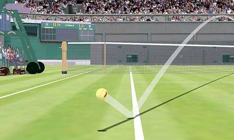

Project Overview
What makes tennis stars like Roger Federer and Serena Williams such effective servers? How can we use graphics to see what is special about great servers and great serves? The aim of this project is to develop effective approaches to visualise the characteristics of serves using serve trajectory data of elite tennis athletes.
Project Goals
The student who takes on this project will use graphical tools in R (ggplot2, rplotly, plot3D, etc.) to propose methods to visually summarise the shape, speed, and location of single serves and serve clusters. The student will work with ball trajectory data from the Australian Open gathered from Hawk-Eye technologies. At the end of the project period, the student will submit a report, written in R markdown, that will describe their proposed visualisation methods and provide illustrative examples.
Schedule of Tasks
- Complete readings, review and summarize serve dataset
- Propose and sketch approaches for visualizing tennis serves
- Develop methods and apply to service data
- Write report of findings
Requirements
This project is ideally suited for a student who is a proficient R programmer and has experience using the ggplot2 package or equivalent.
Readings
Supervisors
The project will be supervised by Professor Di Cook (@dicook) from Monash University and Stephanie Kovalchik (@skoval), a Research Fellow at Victoria University and tennis data scientist at Tennis Australia.
Contact
For inquiries and questions, please contact dicook@monash.edu or stephanie.kovalchik@vu.edu.au.